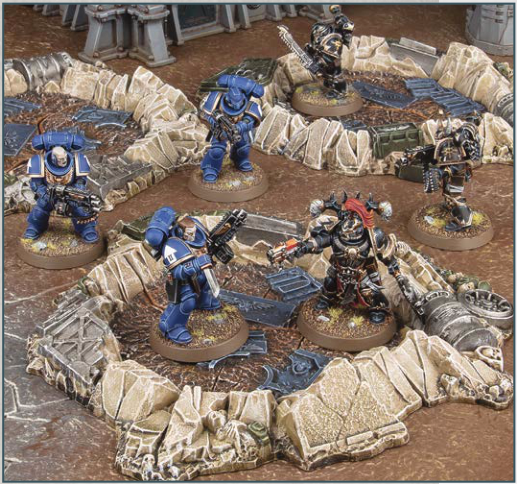
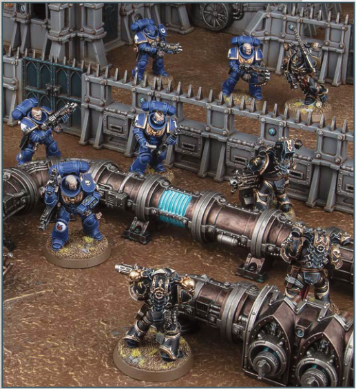

Many battlefields bear the scars of heavy and sustained bombardment.

Models can be moved over this terrain feature, as described on page 15.
Normal visibility rules apply.
Each time a ranged attack is allocated to an Infantry model that is wholly on top of this terrain feature, that model has the Benefit of Cover against that attack.
KEYWORDS: Area Terrain, Crater
Fuel pipes and purpose-made defence lines are excellent positions from which to repel the enemy.

Models can move up, over and down this terrain feature, but they cannot be set up or end any kind of move on top of it.
Normal visibility rules apply.
• In the Charge phase, if an enemy unit is within 1" of this terrain feature, a charging unit on the opposite side of this terrain feature can still make a Charge move against that enemy unit provided it ends that Charge move as close as possible to this terrain feature and within 2" of that enemy unit.
• In the Fight phase, units are eligible to fight - and models can make attacks - if their target is on the opposite side of this terrain feature and within 2" of them.
Each time a ranged attack is allocated to an Infantry model that is wholly within 3" of this terrain feature, if that model is not fully visible to every model in the attacking unit because of this terrain feature, that model has the Benefit of Cover against that attack.
KEYWORDS: Obstacle, Barricade